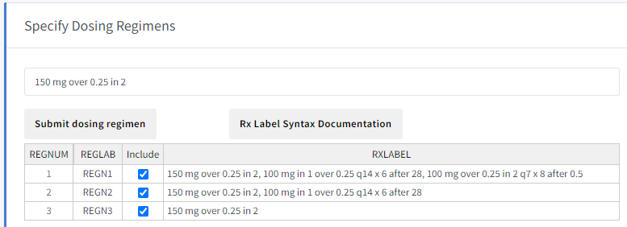
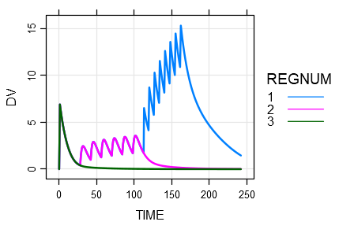
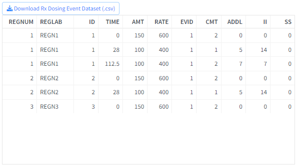
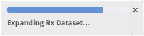
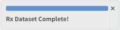
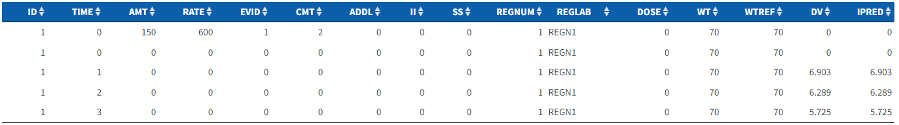

Chapter 4 Simulation Details
This section allows users to Submit Dosing Regimen and provides Simulation Options such as Time Grid, Simulation Settings, and Solver Settings that can be combined with the model to create complex sampling designs.
Each of these are discussed below.
4.1 Define Dosing Regimen
Dosing regimen submission creates an Rx event object that defines the dosing interventions for a single subject in the current model.
Define Dosing Regimen is an text input field that allows full customization of user-defined dosing regimens in a given simulation. By default, there is a placeholder Rx label specification in the text field to illustrate proper Rx label syntax required by mrgsolve::ev_rx for complex, mutli-period dosing regimens.
The Rx Label Syntax Documentation button, located below the Define Dosing Regimen text input box, opens reference documentation for the mrgsolve::ev_rx function in a pop-up window. The rendered documentation outlines the syntax rules for defining a dosing regimen and includes some helpful examples. The Rx Label syntax rules are defined below:
4.1.1 Rx Label Syntax
The
doseis found at the start of the string by sequential digits; this may be integer, decimal, or in scientific notation.Use
into identify the dosing compartment number; must be integer.Use
qto identify the dosing interval; must be integer or decimal number (but not scientific notation).Use
overto indicate an infusion and its duration; integer or decimal number.Use
xto indicate total number of doses; must be integer.Use
thenor,to separate dosing periods.User
afterto insert a lag in the start of a period; integer or decimal number (but not scientific notation).
Provided is an example of a three event dosing regimen using the mrgsolve mrgsolve::ev_rx function.
ev_rx("150 mg over 0.25 in 2,
100 mg in 1 over 0.25 q14 x 6 after 28,
100 mg over 0.25 in 2 q7 x 8 after 0.5")
Events:
time amt rate ii addl cmt evid
1 0.0 150 600 0 0 2 1
2 28.0 100 400 14 5 1 1
3 112.5 100 400 7 7 2 1
4.2 Submit Dosing Regimen
Step 2/4 of Simulation Steps
After specifying the dosing regimen, Submit Dosing Regimen submits the regimen and creates an Rx Dosing Event Dataset as an input to the simulation. The variables included in the dosing event dataset are fixed and the values are dynamically populated according to the specified regimen.
Multiple dosing regimens can be and are submitted sequentially. Each regimen is labeled through unique identifier columns REGNUM and REGLAB. The dosing regimens that have Include selected will only be considered for downstream analysis. An example of submitting the default placeholder regimen segmented into three different regimens is shown below.

After submitting all desired regimens, they can be visualized through the Rx Dosing Profile plot, which depicts the concentration-time profile of a typical subject (no random effects applied) in the predefined dosing regimen, as shown below.

If there is an error in syntax upon submission, Define Dosing Regimen will return (“Invalid Rx specification! Please follow Rx syntax rules…”).
The Rx Dosing Event Dataset can be downloaded as a (.csv) file.

4.3 Simulation Options
4.3.1 Time Grid
The attributes of the simulation Time Grid can be combined with the specified model to create complex sampling designs. The time attributes of the simulation will affect all outputs including the simulation input dataset, simulation output dataset, summary statistic, graph, and report, and are described below:
start: a number indicating start time for the simulation of the PK model.end: a number indicating end time for the simulation of the PK model. By default, theendparameter is set to the calculated simulation end time. Selectingmodify endallows a custom value forend.delta: a number indicating the simulation time step, which is the duration between subsequent time points in the simulation.add: is any arbitrary vector of additional times to simulate.offset: a number that shifts all resultingtgridtime points by a fixed amount.scale: a number that scales all othertgridinput parameters multiplicatively.
4.3.2 Simulation Settings
The Simulation Settings option allows a user to apply the dosing event dataset to a population of subjects, choose the number of simulation iterations, and specify the random seed at which to perform simulations.
Specify number of subjects: Sets the number of subjects to simulate under the defined dosing regimen.Specify number of simulation iterations: Sets the number of simulation iterations to run.Specify random seed: A random seed is a starting point for generating random numbers and is useful for creating simulations that can be reproduced. The default seed is2674474. Although the seed is specified once, each simulation iteration will force the seed to change so that the random effect parameters are modeled appropriately.
4.3.3 Solver Settings
The Solver Settings described below are stored in the model object and passed to the solver when the simulation is started.
atol: Absolute tolerance parameter for local error estimate. Adjust this value lower when you see state variables (compartments) that are becoming very small and possibly turning negative.rtol: Relative tolerance parameter for local error estimate. Adjust this value lower when you want more precision around the calculation of state variables as the system advances.ss_rtol: Steady state absolute tolerance parameter to control the local error estimate when mrgsolve is finding steady state.ss_atol: Steady state relative tolerance parameter to control the local error estimate when mrgsolve is finding steady state.maxsteps: This is the maximum number of steps the solver will take when advancing from one time to the next.hmax: The maximum step size. By default, the solver will take steps of different sizes based on what is happening in the simulation. So in a model where time is in hours, reducing hmax to0.1will prevent the solver from taking a step larger than0.1hours as it tries to advance to the next time.hmin: The minimum step size. Only set this if you’re familiar with this setting.ixpr: A flag to enable printing messages to the R console when the solver switches between non-stiff and stiff solving modes. Rarely used.mxhnil: The maximum number of messages printed when the model is solving. If you have a lot of messages, keep working on your model code.
4.3.4 Expand Rx Dataset
Step 3/4 of Simulation Steps
In order to generate a standardized input dataset for simulation, which contains all default or user-defined Dosing Regimens and Simulation Options, the dataset needs to be “expanded”.
For example:
After specifying the setting: Specify number of subjects in 4.3.2 Simulation Settings, the same dosing regimen Rx event object can be “expanded” for multiple individuals to create a population dataset.
The Expand Rx Dataset button combines all simulation input parameters to generate and display the expanded dataset in the Simulation Input Dataset section at the bottom of the page.
After the initial execution of Expand Rx Dataset, modifying simulation input parameters on the “Model Selection” or “Simulation Options” tabs will require the user to re-expand the input dataset prior to simulation.
Transient pop-up messages will appear stating the steps of the dataset expansion in the form of:
 
The Simulation Input dataset can be downloaded as a (.csv) file.
